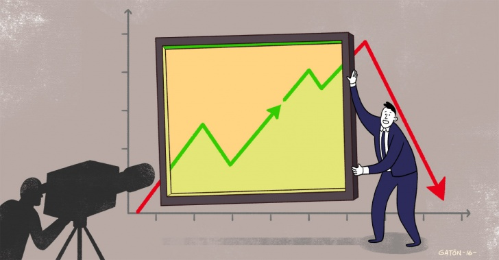
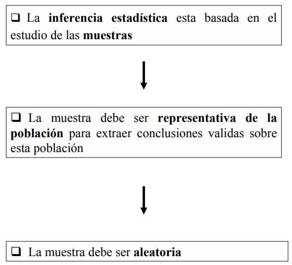

Poblacion
Es el colectivo que abarca a todos los elementos cuya caracteristica
o caracteristicas queremos estudiar;dicho de otra manera, es el conjunto
entero al que se desea describir o del que se necesita establecer
conclusiones. Como ejemplos de poblaciones, podemos citar: todos los
estudiantes de la Universidad Central del Ecuador, o los articulos
producidos en una semana en una determinada fabrica.Por su tamano, las
poblaciones pueden ser finitas o infinitas.
Muestra
Es un conjunto de elementos seleccionados de una poblacion de acuerdo
a un plan de accion previamente establecido (muestreo), para obtener
conclusiones que pueden ser extensivas hacia toda la poblacion. Ejemplos
constituyen las muestras que escogen las empresas encuestadoras en
estudios de sondeos de opinion, o la seleccion de un grupo de articulos
recibidos en una bodega para estimar las condiciones de todo un
embarque.
Censo
Es el estudio de todos y cada uno de los elementos de una poblacion.
Esta condicion hace que este tipo de estudios no sean muy frecuentes,por
cuanto la recoleccion de toda esa informacion, sobre todo cuando el
tamano de la poblacion es muy grande o sus elementos se encuentran muy
dispersos, sea muy costosa.Ejemplo: ultimo censo de poblacion y vivienda
que se realizo en Ecuador en noviembre de 2010.
Muestreo
Es la tecnica que nos permite seleccionar muestras adecuadas de una
poblacion de estudio. El muestreo debe conducir a la obtencion de una
muestra representativa de la poblacion de donde proviene, esta condicion
establece que cada elemento de la poblacion tiene la misma probabilidad
de ser incluida en la muestra. El estudio de seleccion de muestras, en
si constituye todoun estudio por menorizado, que no atane al estudio en
este texto.
Division de la Estadistica
Estadistica descriptiva
Es la parte de la estadistica que permite analizar todo un conjunto
de datos,de los cuales se extraen conclusiones valederas, unicamente
para ese conjunto. Para realizar este analisis se procede a la
recoleccion y representacion de la informacion obtenida. Como ejemplo de
estas estadisticas podemos citar a aquellas que se obtienen generalmente
en los deportes, en los rendimientos academicos de los estudiantes de
una determinada materia, en los negocios al determinar las ventas
obtenidas mensualmente en un determinado ano por una empresa en
particular. # Parametro Un parametro estadistico es un numero que se
obtiene a partir de los datos de una muestra estadistica. Los parametros
estadisticos tambien se conocen como estadisticos descriptivos.
sirven para sintetizar o resumir la informacion dada
por una tabla o por una grafica. En otras palabras, dados unos pocos
parametros estadisticos se puede tener una idea general de la
distribucion de la informacion.
dan un buen resumen cuando se conoce la distribucion
de la poblacion. En particular, si la muestra proviene de una
distribucion normal, entonces el promedio tipico y la desviacion
estandar dan un buen resumen de la distribucion.
Estadigrafos
1. Estadigrafos de orden
Son aquellos que dan informacion acerca del orden en la estructura de
una muestra. Ya se han mencionado dos de ellos que aparecen en forma
instantanea al ordenar la muestra: el maximo, X(n), y el minimo,
X(1).
Se llama percentil a cada uno de los numeros que dividen la muestra
en 100 partes iguales. En consecuencia, ellos son 99 y se denotan por
P(k), donde k es el orden del percentil indicado. Dado el percentil
P(k), este divide la muestra en dos partes, la inferior que contiene el
k% inferior de las observaciones y la superior que contiene el (100-k%)
de las observaciones; entre dos percentiles consecutivos esta contenido
el 1% de la muestra. El siguiente esquema grafica las definiciones
anteriores:
2. Estadigrafos de tendencia central
Cada vez que se observa un fenomeno cuantitativo, interesa saber si
los datos recolectados se aglutinan en torno a ciertos valores
representativos que son propios del fenomeno estudiado.
Estadistica
La estadistica es fundamental para la investigacion, para el analisis
de datos, con el fin de obtener resultados que sirvan como informacion
para determinadas situaciones. Estos metodos estadisticos no se limitan,
ya que los mismos pueden ser aplicados a cualquier campo que se desee
estudiar. A pesar que la estadistica esta intimamente relacionada con la
matematica tambien tiene su utilidad para el ambito social. Y en base a
los estudios que se quieran realizar se debe hacer una diferenciacion
entre los tipos de estadisticas.
Asimetria
Es la falta de simetria entre los datos de una distribucion. refire a
la curva que forman los valores de la serie presenta la misma forma a la
izquierda y derecha de un valor central (media aritmetica).
Rango o Recorrido
Se define el rango o recorrido de los datos como el maximo menos el
minimo, lo que en simbolos se expresa asi:
Rango = X(n) - X(1)
Desviacion Estandar
Para definir la desviacion estandar, previamente presentaremos lo que
se llama desviacion de un dato respecto al promedio, que denotamos por
“di”:
d = X1 - X
Hipotesis
Cualquier teoria que formule posibles lineas de trabajo experimental.
hipotesis nula y alternativa.
Inferencia estadistica

LS0tDQp0aXRsZTogIkNvbmNlcHRvcyBCYXNpY29zIg0Kb3V0cHV0Og0KICBodG1sX2RvY3VtZW50Og0KICAgIGNvZGVfZG93bmxvYWQ6IHRydWUNCiAgICB0b2M6IHRydWUNCiAgICB0b2NfZmxvYXQ6IHRydWUNCiAgICB0aGVtZTogY29zbW8NCi0tLQ0KIVtdKGltYWdlbmVzL3Rlcm1Fc3RhLmpwZykNCmBgYHtyIHNldHVwLCBpbmNsdWRlPUZBTFNFfQ0Ka25pdHI6Om9wdHNfY2h1bmskc2V0KGVjaG8gPSBUUlVFKQ0KYGBgDQoNCg0KIyMgUG9ibGFjaW9uDQpFcyBlbCBjb2xlY3Rpdm8gcXVlIGFiYXJjYSBhIHRvZG9zIGxvcyBlbGVtZW50b3MgY3V5YSBjYXJhY3RlcmlzdGljYSBvIGNhcmFjdGVyaXN0aWNhcyBxdWVyZW1vcyBlc3R1ZGlhcjtkaWNobyBkZSBvdHJhIG1hbmVyYSwgZXMgZWwgY29uanVudG8gZW50ZXJvIGFsIHF1ZSBzZSBkZXNlYSBkZXNjcmliaXIgbyBkZWwgcXVlIHNlIG5lY2VzaXRhIGVzdGFibGVjZXINCmNvbmNsdXNpb25lcy4gQ29tbyBlamVtcGxvcyBkZSBwb2JsYWNpb25lcywgcG9kZW1vcyBjaXRhcjogdG9kb3MgbG9zIGVzdHVkaWFudGVzIGRlIGxhIFVuaXZlcnNpZGFkIENlbnRyYWwgZGVsIEVjdWFkb3IsIG8gbG9zIGFydGljdWxvcyBwcm9kdWNpZG9zIGVuIHVuYSBzZW1hbmEgZW4gdW5hIGRldGVybWluYWRhIGZhYnJpY2EuUG9yIHN1IHRhbWFubywgbGFzIHBvYmxhY2lvbmVzIHB1ZWRlbiBzZXIgZmluaXRhcyBvIGluZmluaXRhcy4NCg0KIyMgTXVlc3RyYQ0KRXMgdW4gY29uanVudG8gZGUgZWxlbWVudG9zIHNlbGVjY2lvbmFkb3MgZGUgdW5hIHBvYmxhY2lvbiBkZSBhY3VlcmRvIGEgdW4gcGxhbiBkZSBhY2Npb24gcHJldmlhbWVudGUgZXN0YWJsZWNpZG8gKG11ZXN0cmVvKSwgcGFyYSBvYnRlbmVyIGNvbmNsdXNpb25lcyBxdWUgcHVlZGVuIHNlciBleHRlbnNpdmFzIGhhY2lhIHRvZGEgbGEgcG9ibGFjaW9uLiBFamVtcGxvcyBjb25zdGl0dXllbiBsYXMgbXVlc3RyYXMgcXVlIGVzY29nZW4gbGFzIGVtcHJlc2FzIGVuY3Vlc3RhZG9yYXMgZW4gZXN0dWRpb3MgZGUgc29uZGVvcyBkZSBvcGluaW9uLCBvIGxhIHNlbGVjY2lvbiBkZSB1biBncnVwbyBkZSBhcnRpY3Vsb3MgcmVjaWJpZG9zIGVuIHVuYSBib2RlZ2EgcGFyYSBlc3RpbWFyIGxhcyBjb25kaWNpb25lcyBkZSB0b2RvIHVuIGVtYmFycXVlLg0KDQojIyBDZW5zbw0KRXMgZWwgZXN0dWRpbyBkZSB0b2RvcyB5IGNhZGEgdW5vIGRlIGxvcyBlbGVtZW50b3MgZGUgdW5hIHBvYmxhY2lvbi4gRXN0YSBjb25kaWNpb24gaGFjZSBxdWUgZXN0ZSB0aXBvIGRlIGVzdHVkaW9zIG5vIHNlYW4gbXV5IGZyZWN1ZW50ZXMscG9yIGN1YW50byBsYSByZWNvbGVjY2lvbiBkZSB0b2RhIGVzYSBpbmZvcm1hY2lvbiwgc29icmUgdG9kbyBjdWFuZG8gZWwNCnRhbWFubyBkZSBsYSBwb2JsYWNpb24gZXMgbXV5IGdyYW5kZSBvIHN1cyBlbGVtZW50b3Mgc2UgZW5jdWVudHJhbiBtdXkgZGlzcGVyc29zLCBzZWEgbXV5IGNvc3Rvc2EuRWplbXBsbzogdWx0aW1vIGNlbnNvIGRlIHBvYmxhY2lvbiB5IHZpdmllbmRhIHF1ZSBzZSByZWFsaXpvIGVuIEVjdWFkb3IgZW4gbm92aWVtYnJlIGRlIDIwMTAuDQoNCiMjIE11ZXN0cmVvDQpFcyBsYSB0ZWNuaWNhIHF1ZSBub3MgcGVybWl0ZSBzZWxlY2Npb25hciBtdWVzdHJhcyBhZGVjdWFkYXMgZGUgdW5hIHBvYmxhY2lvbiBkZSBlc3R1ZGlvLiBFbCBtdWVzdHJlbyBkZWJlIGNvbmR1Y2lyIGEgbGEgb2J0ZW5jaW9uIGRlIHVuYSBtdWVzdHJhIHJlcHJlc2VudGF0aXZhIGRlIGxhIHBvYmxhY2lvbiBkZSBkb25kZSBwcm92aWVuZSwgZXN0YQ0KY29uZGljaW9uIGVzdGFibGVjZSBxdWUgY2FkYSBlbGVtZW50byBkZSBsYSBwb2JsYWNpb24gdGllbmUgbGEgbWlzbWEgcHJvYmFiaWxpZGFkIGRlIHNlciBpbmNsdWlkYSBlbiBsYSBtdWVzdHJhLiBFbCBlc3R1ZGlvIGRlIHNlbGVjY2lvbiBkZSBtdWVzdHJhcywgZW4gc2kgY29uc3RpdHV5ZSB0b2RvdW4gZXN0dWRpbyBwb3IgbWVub3JpemFkbywgcXVlIG5vIGF0YW5lDQphbCBlc3R1ZGlvIGVuIGVzdGUgdGV4dG8uDQoNCiMgRGl2aXNpb24gZGUgbGEgRXN0YWRpc3RpY2ENCiMjIEVzdGFkaXN0aWNhIGRlc2NyaXB0aXZhDQoNCkVzIGxhIHBhcnRlIGRlIGxhIGVzdGFkaXN0aWNhIHF1ZSBwZXJtaXRlIGFuYWxpemFyIHRvZG8gdW4gY29uanVudG8gZGUgZGF0b3MsZGUgbG9zIGN1YWxlcyBzZSBleHRyYWVuIGNvbmNsdXNpb25lcyB2YWxlZGVyYXMsIHVuaWNhbWVudGUgcGFyYSBlc2UgY29uanVudG8uIFBhcmEgcmVhbGl6YXIgZXN0ZSBhbmFsaXNpcyBzZSBwcm9jZWRlIGEgbGEgcmVjb2xlY2Npb24geQ0KcmVwcmVzZW50YWNpb24gZGUgbGEgaW5mb3JtYWNpb24gb2J0ZW5pZGEuIENvbW8gZWplbXBsbyBkZSBlc3RhcyBlc3RhZGlzdGljYXMgcG9kZW1vcyBjaXRhciBhIGFxdWVsbGFzIHF1ZSBzZSBvYnRpZW5lbiBnZW5lcmFsbWVudGUgZW4gbG9zIGRlcG9ydGVzLCBlbiBsb3MgcmVuZGltaWVudG9zIGFjYWRlbWljb3MgZGUgbG9zIGVzdHVkaWFudGVzIGRlIHVuYQ0KZGV0ZXJtaW5hZGEgbWF0ZXJpYSwgZW4gbG9zIG5lZ29jaW9zIGFsIGRldGVybWluYXIgbGFzIHZlbnRhcyBvYnRlbmlkYXMgbWVuc3VhbG1lbnRlIGVuIHVuIGRldGVybWluYWRvIGFubyBwb3IgdW5hIGVtcHJlc2EgZW4gcGFydGljdWxhci4NCiMgUGFyYW1ldHJvDQpVbiBwYXJhbWV0cm8gZXN0YWRpc3RpY28gZXMgdW4gbnVtZXJvIHF1ZSBzZSBvYnRpZW5lIGEgcGFydGlyIGRlIGxvcyBkYXRvcyBkZSB1bmEgbXVlc3RyYSBlc3RhZGlzdGljYS4gTG9zIHBhcmFtZXRyb3MgZXN0YWRpc3RpY29zIHRhbWJpZW4gc2UgY29ub2NlbiBjb21vIGVzdGFkaXN0aWNvcyBkZXNjcmlwdGl2b3MuDQoNCioqc2lydmVuKiogcGFyYSBzaW50ZXRpemFyIG8gcmVzdW1pciBsYSBpbmZvcm1hY2lvbiBkYWRhIHBvciB1bmEgdGFibGEgbyBwb3IgdW5hIGdyYWZpY2EuIEVuIG90cmFzIHBhbGFicmFzLCBkYWRvcyB1bm9zIHBvY29zIHBhcmFtZXRyb3MgZXN0YWRpc3RpY29zIHNlIHB1ZWRlIHRlbmVyIHVuYSBpZGVhIGdlbmVyYWwgZGUgbGEgZGlzdHJpYnVjaW9uIGRlIGxhIGluZm9ybWFjaW9uLg0KDQoqKmRhbioqIHVuIGJ1ZW4gcmVzdW1lbiBjdWFuZG8gc2UgY29ub2NlIGxhIGRpc3RyaWJ1Y2lvbiBkZSBsYSBwb2JsYWNpb24uIEVuIHBhcnRpY3VsYXIsIHNpIGxhIG11ZXN0cmEgcHJvdmllbmUgZGUgdW5hIGRpc3RyaWJ1Y2lvbiBub3JtYWwsIGVudG9uY2VzIGVsIHByb21lZGlvIHRpcGljbyB5IGxhIGRlc3ZpYWNpb24gZXN0YW5kYXIgZGFuIHVuIGJ1ZW4gcmVzdW1lbiBkZSBsYSBkaXN0cmlidWNpb24uDQoNCiMgRXN0YWRpZ3JhZm9zDQoNCiMjIDEuIEVzdGFkaWdyYWZvcyBkZSBvcmRlbg0KU29uIGFxdWVsbG9zIHF1ZSBkYW4gaW5mb3JtYWNpb24gYWNlcmNhIGRlbCBvcmRlbiBlbiBsYSBlc3RydWN0dXJhIGRlIHVuYSBtdWVzdHJhLiBZYSBzZSBoYW4gbWVuY2lvbmFkbyBkb3MgZGUgZWxsb3MgcXVlIGFwYXJlY2VuIGVuIGZvcm1hIGluc3RhbnRhbmVhIGFsIG9yZGVuYXIgbGEgbXVlc3RyYTogZWwgbWF4aW1vLCBYKG4pLCB5IGVsIG1pbmltbywgWCgxKS4NCg0KU2UgbGxhbWEgcGVyY2VudGlsIGEgY2FkYSB1bm8gZGUgbG9zIG51bWVyb3MgcXVlIGRpdmlkZW4gbGEgbXVlc3RyYSBlbiAxMDAgcGFydGVzIGlndWFsZXMuIEVuIGNvbnNlY3VlbmNpYSwgZWxsb3Mgc29uIDk5IHkgc2UgZGVub3RhbiBwb3IgUChrKSwgZG9uZGUgayBlcyBlbCBvcmRlbiBkZWwgcGVyY2VudGlsIGluZGljYWRvLiBEYWRvIGVsIHBlcmNlbnRpbCBQKGspLCBlc3RlIGRpdmlkZSBsYSBtdWVzdHJhIGVuIGRvcyBwYXJ0ZXMsIGxhIGluZmVyaW9yIHF1ZSBjb250aWVuZSBlbCBrJSBpbmZlcmlvciBkZSBsYXMgb2JzZXJ2YWNpb25lcyB5IGxhIHN1cGVyaW9yIHF1ZSBjb250aWVuZSBlbCAoMTAwLWslKSBkZSBsYXMgb2JzZXJ2YWNpb25lczsgZW50cmUgZG9zIHBlcmNlbnRpbGVzIGNvbnNlY3V0aXZvcyBlc3RhIGNvbnRlbmlkbyBlbCAxJSBkZSBsYSBtdWVzdHJhLiBFbCBzaWd1aWVudGUgZXNxdWVtYSBncmFmaWNhIGxhcyBkZWZpbmljaW9uZXMgYW50ZXJpb3JlczoNCg0KIyMgMi4gRXN0YWRpZ3JhZm9zIGRlIHRlbmRlbmNpYSBjZW50cmFsDQpDYWRhIHZleiBxdWUgc2Ugb2JzZXJ2YSB1biBmZW5vbWVubyBjdWFudGl0YXRpdm8sIGludGVyZXNhIHNhYmVyIHNpIGxvcyBkYXRvcyByZWNvbGVjdGFkb3Mgc2UgYWdsdXRpbmFuIGVuIHRvcm5vIGEgY2llcnRvcyB2YWxvcmVzIHJlcHJlc2VudGF0aXZvcyBxdWUgc29uIHByb3Bpb3MgZGVsIGZlbm9tZW5vIGVzdHVkaWFkby4NCg0KIyBFc3RhZGlzdGljYQ0KTGEgZXN0YWRpc3RpY2EgZXMgZnVuZGFtZW50YWwgcGFyYSBsYSBpbnZlc3RpZ2FjaW9uLCBwYXJhIGVsIGFuYWxpc2lzIGRlIGRhdG9zLCBjb24gZWwgZmluIGRlIG9idGVuZXIgcmVzdWx0YWRvcyBxdWUgc2lydmFuIGNvbW8gaW5mb3JtYWNpb24gcGFyYSBkZXRlcm1pbmFkYXMgc2l0dWFjaW9uZXMuIEVzdG9zIG1ldG9kb3MgZXN0YWRpc3RpY29zIG5vIHNlIGxpbWl0YW4sIHlhIHF1ZSBsb3MgbWlzbW9zIHB1ZWRlbiBzZXIgYXBsaWNhZG9zIGEgY3VhbHF1aWVyIGNhbXBvIHF1ZSBzZSBkZXNlZSBlc3R1ZGlhci4gQSBwZXNhciBxdWUgbGEgZXN0YWRpc3RpY2EgZXN0YSBpbnRpbWFtZW50ZSByZWxhY2lvbmFkYSBjb24gbGEgbWF0ZW1hdGljYSB0YW1iaWVuIHRpZW5lIHN1IHV0aWxpZGFkIHBhcmEgZWwgYW1iaXRvIHNvY2lhbC4gWSBlbiBiYXNlIGEgbG9zIGVzdHVkaW9zIHF1ZSBzZSBxdWllcmFuIHJlYWxpemFyIHNlIGRlYmUgaGFjZXIgdW5hIGRpZmVyZW5jaWFjaW9uIGVudHJlIGxvcyB0aXBvcyBkZSBlc3RhZGlzdGljYXMuDQoNCiMgQXNpbWV0cmlhDQpFcyBsYSBmYWx0YSBkZSBzaW1ldHJpYSBlbnRyZSBsb3MgZGF0b3MgZGUgdW5hIGRpc3RyaWJ1Y2lvbi4gcmVmaXJlIGEgbGEgY3VydmEgcXVlIGZvcm1hbiBsb3MgdmFsb3JlcyBkZSBsYSBzZXJpZSBwcmVzZW50YSBsYSBtaXNtYSBmb3JtYSBhIGxhIGl6cXVpZXJkYSB5IGRlcmVjaGEgZGUgdW4gdmFsb3IgY2VudHJhbCAobWVkaWEgYXJpdG1ldGljYSkuDQoNCiMgTGEgTWVkaWFuYQ0KRXMgYXF1ZWwgdmFsb3IgcXVlIGRpdmlkZSBsYSBtdWVzdHJhIGVuIGRvcyBwYXJ0ZXMgaWd1YWxlcywgY29tbyBzZSBkaWpvIGFudGVyaW9ybWVudGUuIERlYmUgbm90YXJzZSBxdWUgbGEgbWVkaWFuYSBlcyB1biBlc3RhZGlncmFmbyBkZSBvcmRlbiB5IHRhbWJpZW4gZGUgY2VudHJhbGl6YWNpb24uDQoNCiMgTGEgTWVkaWEgYXJpdG1ldGljYSBvIFByb21lZGlvIGFyaXRtZXRpY28NCkVzIGVsIGVzdGFkaWdyYWZvIGRlIHRlbmRlbmNpYSBjZW50cmFsIG1hcyBjb25vY2lkbywgdXNhZG8geSBhYnVzYWRvLiBQYXJhIHRvZG9zIGVzIHNhYmlkbyBxdWUgZGFkYSB1bmEgY29sZWNjaW9uIGRlIGRhdG9zIFgxLCBYMiwgLi4uLiwgWG4sIGVsIHByb21lZGlvIHNlIGRlZmluZSBjb21vIGxhIHN1bWEgZGUgbG9zIGRhdG9zIGRpdmlkaWRhIHBvciBsYSBjYW50aWRhZCBkZSBkYXRvcywgeSBzZSBkZW5vdGEgcG9yOyBlbiBzaW1ib2xvcyBlbCBwcm9tZWRpbyBlczoNCg0KIVtdKGltYWdlbmVzL21lZGlhLnBuZykNCg0KIyBSYW5nbyBvIFJlY29ycmlkbw0KU2UgZGVmaW5lIGVsIHJhbmdvIG8gcmVjb3JyaWRvIGRlIGxvcyBkYXRvcyBjb21vIGVsIG1heGltbyBtZW5vcyBlbCBtaW5pbW8sIGxvIHF1ZSBlbiBzaW1ib2xvcyBzZSBleHByZXNhIGFzaToNCg0KKipSYW5nbyA9IFgobikgLSBYKDEpKioNCg0KIyBEZXN2aWFjaW9uIEVzdGFuZGFyDQpQYXJhIGRlZmluaXIgbGEgZGVzdmlhY2lvbiBlc3RhbmRhciwgcHJldmlhbWVudGUgcHJlc2VudGFyZW1vcyBsbyBxdWUgc2UgbGxhbWEgZGVzdmlhY2lvbiBkZSB1biBkYXRvIHJlc3BlY3RvIGFsIHByb21lZGlvLCBxdWUgZGVub3RhbW9zIHBvciAiZGkiOg0KDQoqKmQgPSBYMSAtIFgqKg0KDQojIEhpcG90ZXNpcw0KQ3VhbHF1aWVyIHRlb3JpYSBxdWUgZm9ybXVsZSBwb3NpYmxlcyBsaW5lYXMgZGUgdHJhYmFqbyBleHBlcmltZW50YWwuIA0KaGlwb3Rlc2lzIG51bGEgeSBhbHRlcm5hdGl2YS4NCg0KIyBJbmZlcmVuY2lhIGVzdGFkaXN0aWNhDQoNCiFbXShpbWFnZW5lcy9pbmZlcmVuY2lhLnBuZykNCg0KDQojIEJJQkxJT0dSQUZJQVMgICAgIA0KDQohW10oaW1hZ2VuZXMvSUNPTi5qcGcpDQoNCi1baHR0cHM6Ly93d3cuaW5laS5nb2IucGUvbWVkaWEvTWVudVJlY3Vyc2l2by9wdWJsaWNhY2lvbmVzX2RpZ2l0YWxlcy9Fc3QvTGliMDkwMC9MaWJyby5wZGZdDQoNCi1baHR0cDovL3d3dy5kc3BhY2UudWNlLmVkdS5lYy9iaXRzdHJlYW0vMjUwMDAvMTM3MjAvMy9GdW5kYW1lbnRvcyUyMEIlQzMlQTFzaWNvcyUyMGRlJTIwRXN0YWQlQzMlQURzdGljYS1MaWJyby5wZGZdDQoNCi1baHR0cDovL2ludHJhbmV0LmNvbXVuaWRhZGFuZGluYS5vcmcvRG9jdW1lbnRvcy9SZXVuaW9uZXMvRFRyYWJham8vU0dfUkVHX0RJRVNfSVZfZHQlMjAyLnBkZl0NCg==